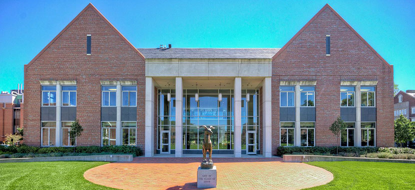

Somers High School

Worcester Polytechnic Institute
In college I am a member of the American Society of Mechanical Engineers (ASME) as well as the Societe of Manufacturing Engineers (SME). In addition I am a brother of Theta Chi Fraternity Epsilon Chapter. For the fraternity I was elected as the Projects Chair/Building Manager for my Junior year.